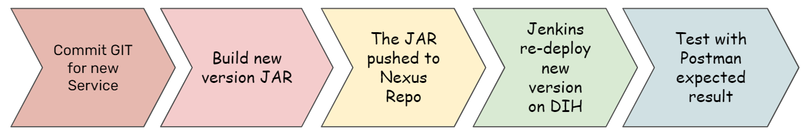
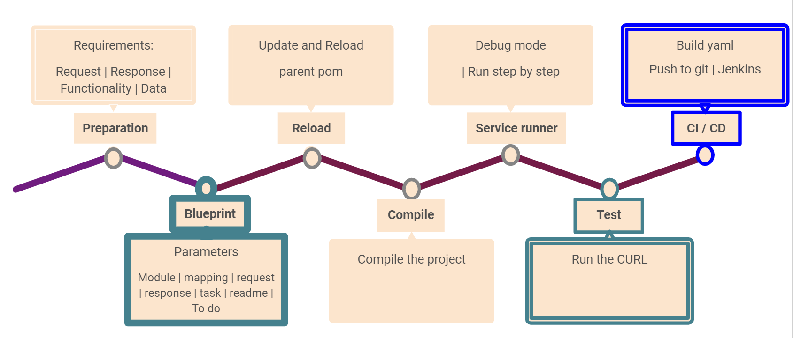

Continuous Integration and Continuous Delivery (CI/CD), part of DevOps, introduces automation into the stages of integration, delivery and deployment.
Smart DIH’s CI/CD integration uses minimum code and achieves maximum flexibility using an Auto Generate skeleton. The user is only required to define inputs, outputs and business logic. This integration offers simple deploy, undeploy, and update operations, and registers automatically with the Hashicorp Consul and the Northbound Nginx. Security is handled by the Northbound Nginx and is transparent for the micro-services.
While the production DIH usually provisions immutable services, the code factory has a dev-dih which provides:
Easy connection
Dev can modify and delete objects
All data types are represented, but with a smaller data set
Integration into Jenkins / Git / test systems
Space connected to the IDE
Security scanners in-place
Disposable environments
The GigaSpaces team and the Customer’s DevOps team create a code factory which is integrated and fully aligned with CI/CD standards. The code is portable and can be reused on other projects since it is not embedded in the platform. The pipeline enables developers to focus on the business logic and not on the ecosystem and integration.

The launch of new services uses a simple, flexible blueprint that provides:
A common library and utils
Import data models and types
REST service skeleton
Dynamic service generator
Reference data lookup
CI/CD pipeline
Data Exploration UI
Versioning for micro-services
Industry standard framework approved by devSecOps
Rapid innovation capabilities such as:
OpenTracing
Service registration
Canary deployment
Streaming and Kafka integration
REST/SOAP
Service meshing
